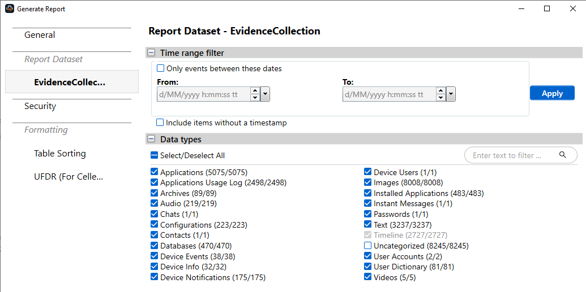
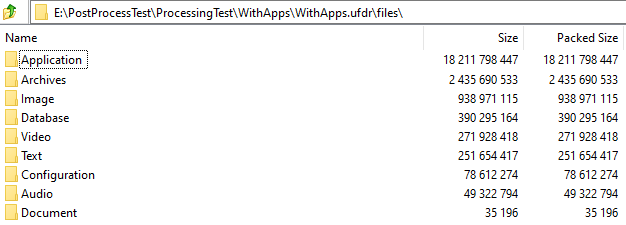
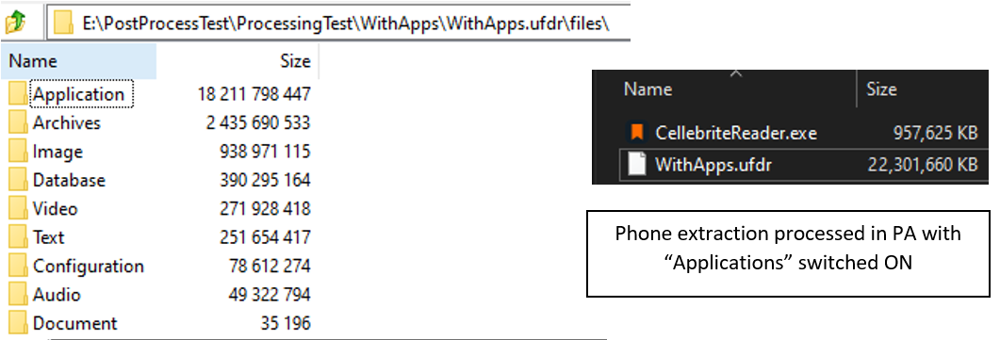
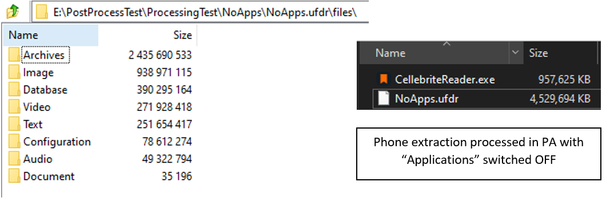

Post-Extract Processing
- published
- reading time
- 2 minutes
Post-Extract Processing
Recently, I have experienced many crashes and slowdowns when using Cellebrite Reader. This is more than likely due to some of the enormous sizes of UFDR reports that I am generating. Every time that a UFDR report is opened, Cellebrite Reader has to load the UFDR report and process it. Cellebrite PA (Physical Analyzer) does perform some file compression when packing it into a UFDR report. Although, this greatly outweighs the recoupment of space as there is a large amount of data that has to be packed regardless.
Before processing a phone extraction into a UFDR report, Cellebrite PA queries the user to select what to include / exclude from the UFDR report. The “Data Types” that Cellebrite PA identifies are some of the following:

By opening the .ufdr file that is genereated when creating a Cellebrite Reader report from Cellebrite PA, we can see the files that PA has packed into the report. These files are the original files that were extracted from the phone at the time of acquisition. Cellebrite Reader calls these files and loads them at the time of opening the UFDR report.

As applications for mobile devices, ‘.apk’ and ‘.ipa’ are binary files and have already been compressed / processed during code compilation, they are difficult to compress further.
Cellebrite Reader displays these Applications separately to the “Application List” which is a list of applications that was installed on the phone.
There is no discernible difference to reviewers or to the Case Officer when generating reports. An application list is still generated and ingested into the UFDR report, although the actual Application binaries are not. After testing, I have identified the following UFDR report size differences:
 
After testing with a range of test phones extractions, I have been able to successfully remove large amounts of data and create smaller UFDR reports. By utilising this method, I have seen savings upwards of 80+ GB.
The extreme sizes in applications can more or less be related to software vendors including more apps and bloatware at the time of purchase for these mobile devices. It has been stated that SAMSUNG with their Galaxy S23 explodes the 128gb storage with up to 50gb of stock applications. Processing times are incredibly different, the above acquisitions took 30 minutes and 5 minutes respectively. The time recorded was done on a test phone.
Moving forward I will be generating UFDR reports without the “Applications” selected, this results in smaller file size, fast loading times and less prone to crashing.